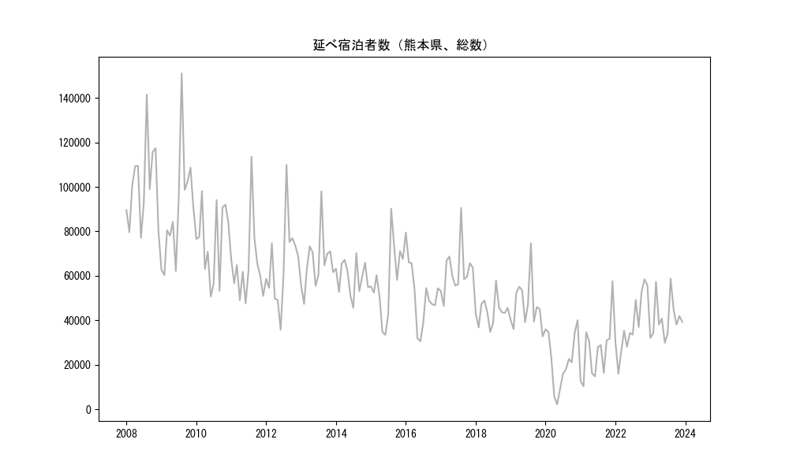
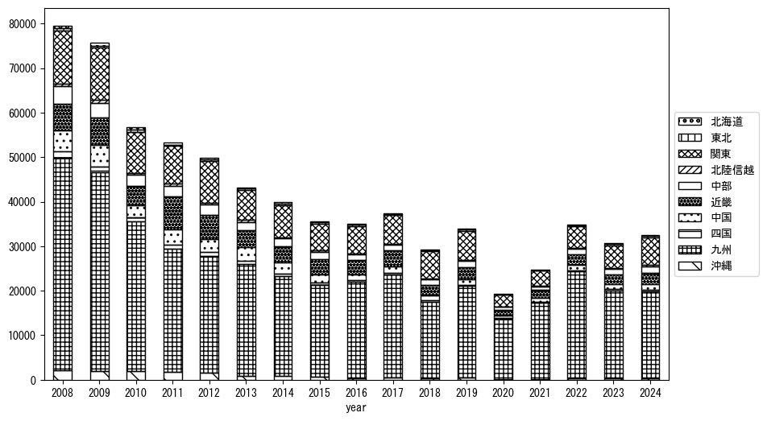
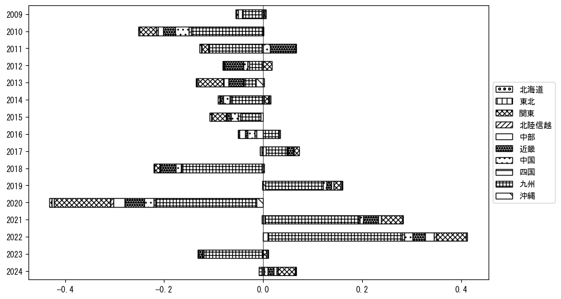
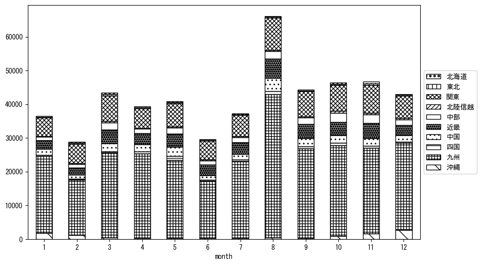
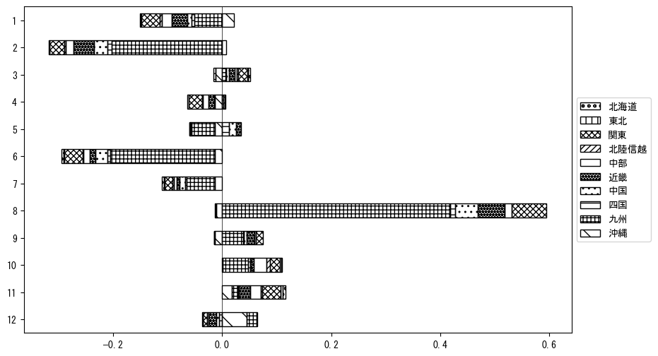

-
トップ
-
熊本県
熊本県
１．延べ宿泊者（総数）の推移
時系列グラフ

図１：熊本県内の従業員数100人以上の宿泊施設での延べ宿泊者数（国外、居住地不詳を含む総数）。
基本統計量
表１：従業員数100人以上の宿泊施設での延べ宿泊者の総数（国外、および居住地不詳を含む）に関する基本統計量。単位は人泊。平均は１か月あたりの平均値を表す。図１に対応。
| 2008年 |
101,005 |
18,907 |
77,095 (6月) |
141,518 (8月) |
| 2009年 |
89,554 |
25,198 |
60,300 (2月) |
151,041 (8月) |
| 2010年 |
75,643 |
16,744 |
50,775 (6月) |
98,081 (3月) |
| 2011年 |
64,712 |
17,487 |
47,591 (6月) |
113,549 (8月) |
| 2012年 |
65,652 |
18,942 |
35,755 (6月) |
109,923 (8月) |
| 2013年 |
65,910 |
12,666 |
47,383 (2月) |
97,983 (8月) |
| 2014年 |
59,249 |
7,664 |
45,599 (7月) |
70,234 (8月) |
| 2015年 |
57,478 |
16,481 |
33,507 (6月) |
90,180 (8月) |
| 2016年 |
51,522 |
14,293 |
30,621 (6月) |
79,492 (1月) |
| 2017年 |
62,076 |
10,930 |
46,447 (2月) |
90,531 (8月) |
| 2018年 |
44,153 |
6,006 |
34,818 (6月) |
57,851 (8月) |
| 2019年 |
46,804 |
11,264 |
32,785 (12月) |
74,710 (8月) |
| 2020年 |
21,960 |
12,484 |
2,223 (5月) |
40,068 (12月) |
| 2021年 |
26,077 |
13,133 |
10,380 (2月) |
57,577 (12月) |
| 2022年 |
38,044 |
13,215 |
15,990 (2月) |
58,481 (11月) |
| 2023年 |
40,808 |
9,103 |
29,937 (6月) |
58,744 (8月) |
２．宿泊者数の重心（年平均の推移）
図２：熊本県内の従業員数100人以上の宿泊施設での宿泊者数（国外、居住地不詳を除く）の重心（年平均の推移）。
全画面表示
重心の前年平均からの移動距離と方位、および緯度・経度
表２：重心の前年平均からの移動距離と方位、および緯度・経度。図２に対応。
| 2008年 |
— |
— |
33.7242 |
132.8740 |
| 2009年 |
東北東 |
8.1km |
33.7520 |
132.9554 |
| 2010年 |
南南東 |
5.2km |
33.7107 |
132.9811 |
| 2011年 |
東北東 |
26.7km |
33.7698 |
133.2601 |
| 2012年 |
東北東 |
14.7km |
33.8135 |
133.4102 |
| 2013年 |
西 |
37.6km |
33.7865 |
133.0051 |
| 2014年 |
東北東 |
25.4km |
33.8578 |
133.2663 |
| 2015年 |
西 |
11.6km |
33.8669 |
133.1411 |
| 2016年 |
北北西 |
9.7km |
33.9494 |
133.1070 |
| 2017年 |
南西 |
13.9km |
33.8470 |
133.0197 |
| 2018年 |
東北東 |
34.7km |
33.9479 |
133.3744 |
| 2019年 |
西南西 |
22.2km |
33.8406 |
133.1712 |
| 2020年 |
西南西 |
63.4km |
33.7162 |
132.5029 |
| 2021年 |
東南東 |
10.0km |
33.6967 |
132.6081 |
| 2022年 |
南南西 |
7.3km |
33.6356 |
132.5790 |
| 2023年 |
東北東 |
38.5km |
33.7655 |
132.9638 |
運輸局別延べ宿泊者数
時系列（年平均）

図３：熊本県内の従業員数100人以上の宿泊施設での１か月あたり平均宿泊者数（国外、居住地不詳を除く）の運輸局別内訳。
寄与度（前年からの変化率に対する）

図４：熊本県内の従業員数100人以上の宿泊施設での運輸局別宿泊者数（国外、居住地不詳を除く）から求めた寄与度。
３．宿泊者数の重心（月別）
図５：熊本県内の従業員数100人以上の宿泊施設での宿泊者数（国外、居住地不詳を除く）の重心（月別）。観測期間は2008年1月から2023年12月まで。
全画面表示
全期間（2008年1月～2023年12月）の平均と月別平均の比較
表３：全期間の平均から月別平均までの移動距離と方位、および緯度・経度。図５に対応。
| 全期間 |
— |
— |
33.7925 |
133.0137 |
| 1月 |
南西 |
46.4km |
33.5409 |
132.6145 |
| 2月 |
東 |
14.9km |
33.7824 |
133.1737 |
| 3月 |
北東 |
29.5km |
33.9908 |
133.2263 |
| 4月 |
西北西 |
17.5km |
33.8479 |
132.8362 |
| 5月 |
北北東 |
8.3km |
33.8613 |
133.0480 |
| 6月 |
東北東 |
30.2km |
33.9277 |
133.2964 |
| 7月 |
北東 |
14.1km |
33.8877 |
133.1140 |
| 8月 |
西 |
25.7km |
33.7759 |
132.7369 |
| 9月 |
北北東 |
9.8km |
33.8720 |
133.0597 |
| 10月 |
東 |
12.9km |
33.8137 |
133.1502 |
| 11月 |
東 |
20.8km |
33.7868 |
133.2378 |
| 12月 |
南西 |
51.9km |
33.4231 |
132.6707 |
運輸局別延べ宿泊者数
月別平均（2008年1月～2023年12月）

図６：熊本県内の従業員数100人以上の宿泊施設での宿泊者数（国外、居住地不詳を除く）の運輸局別内訳（月別）。
寄与度（全期間の平均から月別平均への変化率に対する）

図７：熊本県内の従業員数100人以上の宿泊施設での運輸局別宿泊者数（国外、居住地不詳を除く）から求めた寄与度（月別）。
４．データのダウンロード
出典：観光庁「宿泊旅行統計調査」に収録された「施設所在地、居住地別延べ宿泊者数（従業員数100人以上の施設）」
国土地理院「白地図（地理院タイル）」（図２と図５）